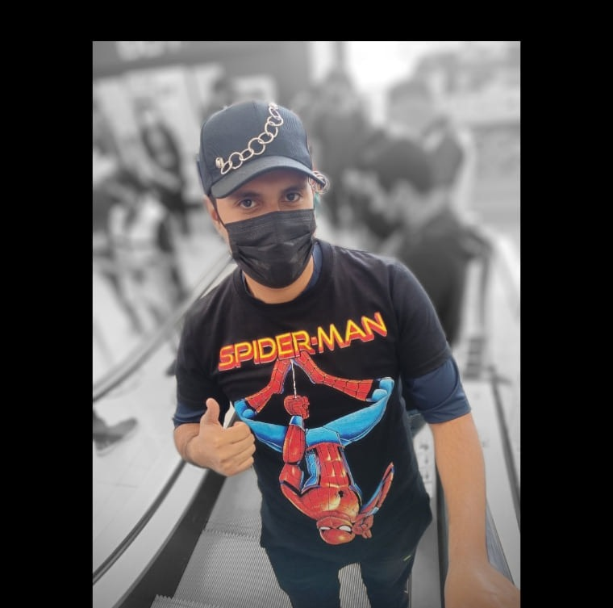
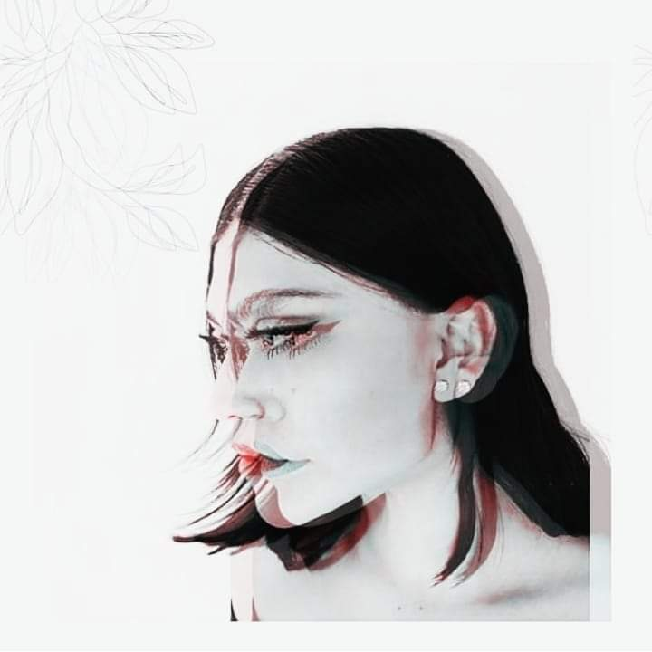

Saúl Eliseo Salazar Rios

Me encantan los tacos y la programación, me considero una persona medio friki pero no otaku xd Mi frase favorita es: «El ayer es historia, el mañana es un misterio, el hoy es un regalo, por eso se llama presente»
Diego Cruz

Me gusta la tecnología, mas especifico el desarrollo de software, programación, desde pequeño me ha gustado y me gustaría dedicarme a ello, me gusta la ganancia de masa muscular he estado unos meses en ello y ahora me quiero volver un experto en ello
Nelly Betzabe

Me gusta el k-pop ,Anime y el K-drama.Tambien me gusta cocinar,me gusta la fotografia,los juegos de mesa y video juegos y sobre todo la comedia.Mi comida favorita es el POZOLE al igual que los CHILES EN NOGADA ¡YOMI, YOMI!
Dayana Zugeith
Me encanta el helado, admirar el cielo y los michis.
Rebecca

Disfruto comer pastel, beber cerveza, echar chismesito, dormir, hacer manualidades, aprender palabras nuevas, jugar volleyball; entre otras cosas